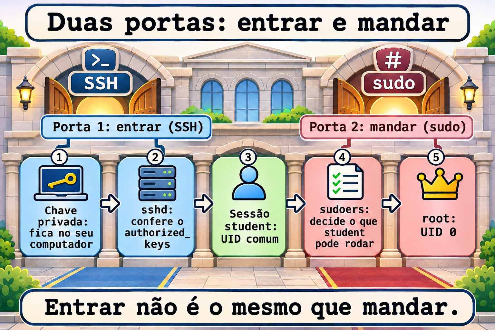
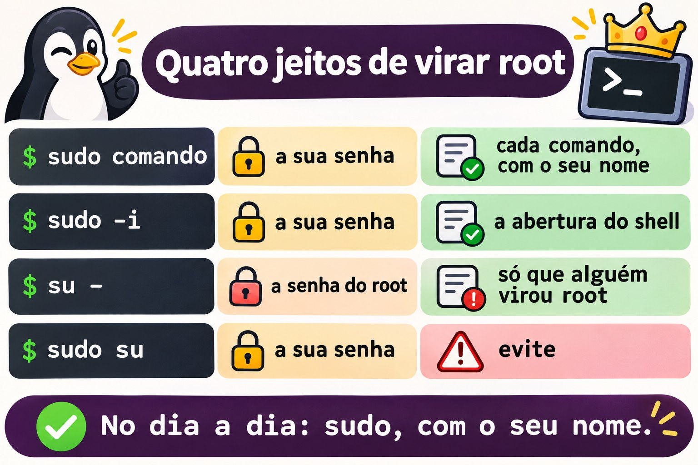
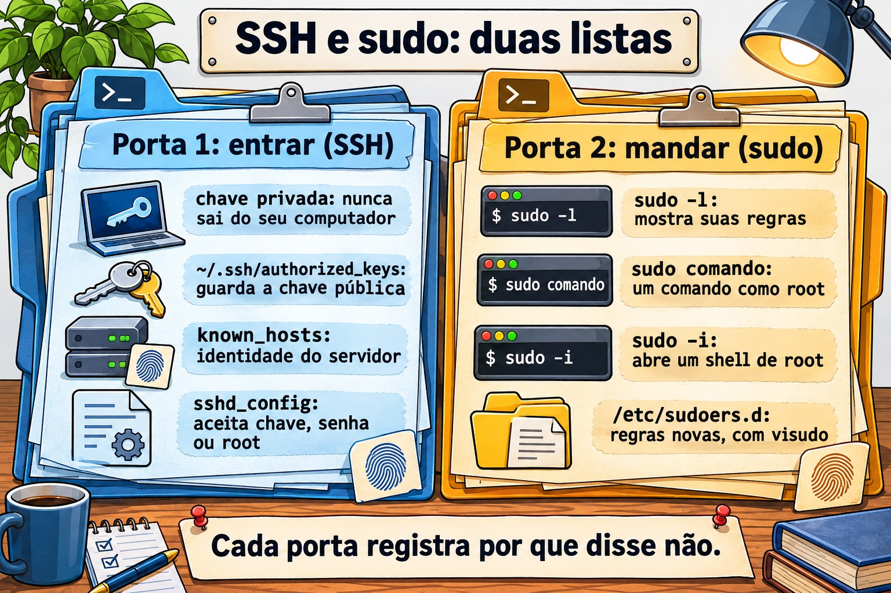
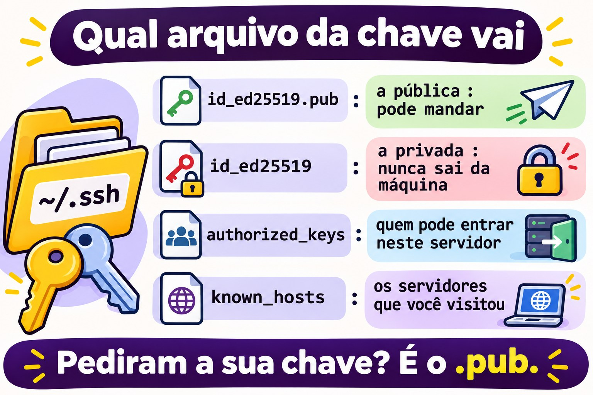
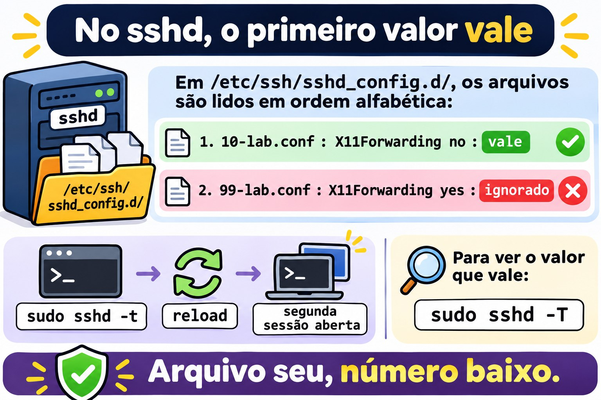
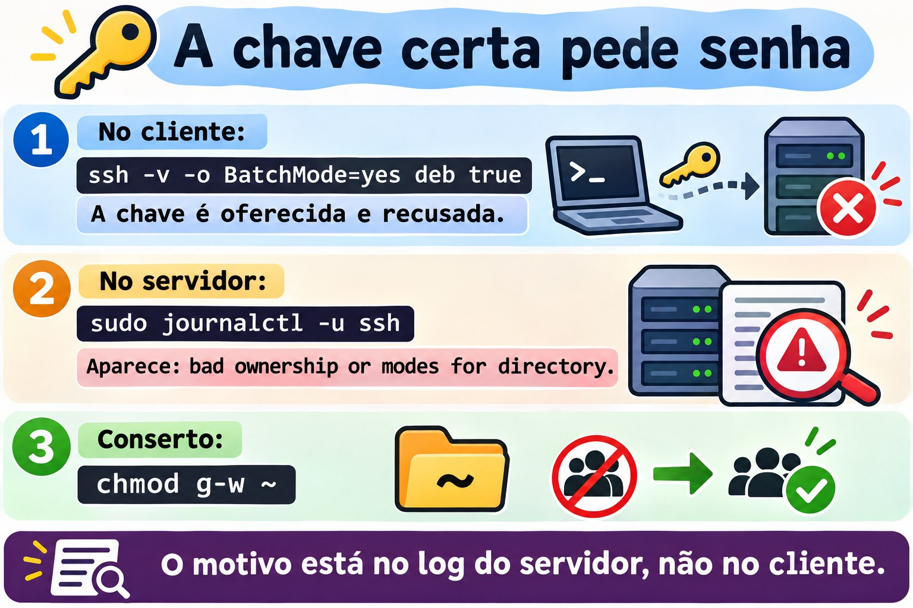

Aula 2.5 · Acesso remoto e privilégios
Quinta aula do Módulo 2. Quase todo trabalho num servidor começa com duas coisas: entrar nele e ganhar o poder de mexer. As duas parecem simples até falharem. A chave que "sempre funcionou" passa a pedir senha porque alguém deu chmod na pasta errada. A regra de sudo criada ontem não vale porque o arquivo tem um ponto no nome. O aviso de que a identidade do servidor mudou aparece, e o técnico apaga sem pensar. Hoje você aprende como o SSH decide se deixa você entrar, como o sudo decide o que você pode fazer, e onde cada um deixa escrito o motivo quando diz não. No fim, você entra de uma VM na outra sem senha, com um apelido curto, e sabe ler o log quando isso para de funcionar.
| Ficha | Aula 2.5 |
|---|---|
| Módulo | M2 · Sistema, usuários e permissões, aula 5 de 8 |
| Quando | Semana 5 |
| Ao final você consegue | Dizer que tipo de conta é cada usuário pelo UID e pelo shell; usar sudo, sudo -i e su - sabendo o que cada um muda; ler e criar regras em /etc/sudoers.d com visudo; conferir a identidade de um servidor na primeira conexão; criar uma chave SSH, instalá-la em outro servidor e entrar sem senha; usar ~/.ssh/config para apelidos; copiar arquivos com scp e rsync; mudar a configuração do sshd com um arquivo próprio, testar antes de aplicar e conferir o valor que vale; achar no log por que um login ou um sudo foi recusado |
| Pré-requisitos | Aula 2.4 (a escada de rede; as linhas rocky-lab e debian-lab no /etc/hosts); Aula 2.3 (journalctl -u); Aula 1.4 (permissões lidas com ls -l) |
| Tempo | Cerca de 2h30 |
| Snapshots | m2a5-inicio e m2a5-fim nas duas VMs |
1 · Aquecimento
Três perguntas, de cabeça. Escreva as respostas; o Gabarito confere no fim.
- Você entra num servidor com chave SSH há meses. Hoje ele pede senha. Palpite: o problema está no seu computador ou no servidor?
- No Windows, um administrador clica em "Executar como administrador". Palpite: no Linux, o
sudoabre uma sessão de root ou roda só um comando como root? - Na primeira vez que você entra num servidor por SSH, ele pergunta
Are you sure you want to continue connecting (yes/no)?. Palpite: o que essa pergunta protege?
2 · Por que importa
Senha por SSH é o primeiro alvo de qualquer servidor exposto. Basta olhar o log de um servidor com a porta 22 aberta para a internet: milhares de tentativas por dia, com root, admin, test, oracle. Chave SSH resolve isso, mas só para quem entende o que está fazendo. A chave privada copiada para o servidor errado, o authorized_keys com chaves de quem saiu da empresa há três anos e a pasta .ssh com permissão aberta são achados comuns em qualquer auditoria.
Com o sudo é igual. Uma regra boa diz quem pode fazer o quê, e o log mostra quem fez. Uma regra ruim dá ALL para todo mundo, ou é editada sem visudo e para de valer sem aviso. E o hábito de entrar como root direto apaga o rastro: no log aparece "root fez", e ninguém sabe qual dos cinco técnicos era.
O terceiro ponto é o aviso de identidade. Quando o SSH diz que a chave do servidor mudou, pode ser só uma reinstalação. Pode também ser outra máquina respondendo no lugar dele. Quem apaga o aviso sem conferir treina a si mesmo a ignorar o único alarme que o SSH tem.
3 · Modelo mental
Entrar e mandar são duas portas diferentes. O SSH decide se você entra; o
sudodecide o que você pode fazer depois. Cada um tem a sua lista, e cada um escreve no log por que disse não.
Seu computador Servidor
────────────── ────────
~/.ssh/known_hosts ◄── confere ─── /etc/ssh/ssh_host_*_key.pub "é mesmo esse servidor?"
~/.ssh/id_ed25519 ─── prova ────► ~/.ssh/authorized_keys "você tem a chave privada
(privada, fica aqui) (só as públicas) de uma destas públicas?"
sshd_config + sshd_config.d "esse método é permitido?"
│
▼ entrou como rodrigo
/etc/sudoers + sudoers.d "rodrigo pode rodar isto
como root?"
journal / /var/log/secure "por que disse não"Quatro ideias carregam a aula:
| Ideia | O que quer dizer | Consequência |
|---|---|---|
| A chave tem duas metades | A privada fica com você e nunca sai; a pública vai para todo servidor onde você quer entrar | Se alguém pede a sua chave, a resposta é sempre o arquivo .pub |
| Os dois lados se conferem | O servidor confere a sua chave no authorized_keys; você confere a do servidor no known_hosts | O aviso de identidade mudada é o seu lado dizendo "não é quem era" |
O sshd é desconfiado | Se a sua pasta pessoal, a .ssh ou o authorized_keys podem ser alterados por outros, ele ignora a chave | Chave que parou de funcionar é, quase sempre, permissão ou dono errado no servidor |
sudo é por comando e deixa rastro | Cada sudo é conferido nas regras e anotado no log com o seu nome | Prefira sudo comando a ficar logado como root; o log conta quem fez |


4 · Conceito em camadas
Essencial
Que tipo de conta é esta. Toda conta tem um número, o UID. O sistema decide quem é quem pelo número, não pelo nome:
id # você: UID, grupo principal, todos os grupos
id root
getent passwd root rodrigo chronyd # a linha de cada um no /etc/passwdroot:x:0:0:root:/root:/bin/bash
rodrigo:x:1000:1000:Rodrigo:/home/rodrigo:/bin/bash
chronyd:x:994:991:chrony system user:/var/lib/chrony:/sbin/nologin| Campo | Exemplo | Quer dizer |
|---|---|---|
| 1 · nome | rodrigo | O nome que você digita |
| 2 · senha | x | A senha está no /etc/shadow, que só o root lê |
| 3 · UID | 1000 | O número da conta |
| 4 · GID | 1000 | O grupo principal |
| 5 · descrição | Rodrigo | Texto livre, o nome completo |
| 6 · pasta pessoal | /home/rodrigo | Onde o login começa |
| 7 · shell | /bin/bash | O programa que roda no login. /sbin/nologin ou /usr/sbin/nologin = não entra |
Três tipos de conta, pelo UID:
| Tipo | UID | Para quê | Shell típico |
|---|---|---|---|
| root | 0 | O administrador. O kernel não confere permissão para o UID 0 | /bin/bash |
| Conta de sistema | 1 a 999 | Um serviço roda com ela (chronyd, sshd, apache), para não rodar como root | nologin |
| Usuário comum | 1000 em diante | Pessoas | /bin/bash |
O nome root não tem nada de especial: qualquer conta com UID 0 é root. Uma segunda linha com UID 0 no /etc/passwd é um dos primeiros sinais de invasão que uma auditoria procura.
Quem está aqui. Três comandos, do mais curto ao mais completo:
whoami # quem eu sou agora
who # quem está logado, de onde
w # quem está logado e o que está fazendo
last -n 10 # os últimos logins, inclusive os que já saíramsudo: um comando como root. O sudo pede a sua senha, confere nas regras se você pode, roda o comando e anota no log:
sudo whoami # root
sudo -l # o que eu posso fazer com sudoDepois da primeira senha, o sudo não pede de novo por alguns minutos (5, por padrão). sudo -k esquece a senha na hora.
Entrar em outra máquina. O SSH já é o que você usa para chegar às VMs:
ssh rodrigo@10.1.0.52 # usuário@máquina
ssh debian-lab # mesmo usuário que você é agora; nome do /etc/hosts
ssh debian-lab 'uptime' # roda um comando lá e volta
exit # sai da sessão remotaIntermediário
sudo -i, su - e sudo su. Os três abrem um shell de root, e não são iguais:
| Comando | Pede a senha de quem | Fica no log | Ambiente |
|---|---|---|---|
sudo comando | A sua | Cada comando, com o seu nome | O seu, com PATH seguro |
sudo -i | A sua | A abertura do shell, com o seu nome; o que você faz dentro, não | O do root, como num login |
su - | A do root | Só que alguém virou root | O do root, como num login |
sudo su | A sua | Que você rodou su | Herdado pela metade: evite |
su - exige que o root tenha senha e que você a conheça, o que quer dizer que todo técnico sabe a mesma senha. Em servidor bem configurado, a senha do root fica guardada e ninguém usa no dia a dia: todo mundo entra com o próprio nome e usa sudo. O - (ou -l) do su importa: sem ele, você vira root com o ambiente do seu usuário, e comandos de /usr/sbin podem não ser encontrados.
Quem pode usar sudo. As regras ficam em /etc/sudoers e nos arquivos de /etc/sudoers.d/. A linha que importa no Rocky:
%wheel ALL=(ALL) ALLE no Debian:
%sudo ALL=(ALL:ALL) ALL| Pedaço | Quer dizer |
|---|---|
%wheel | Quem: o % quer dizer grupo. Sem %, é um usuário |
ALL= | Em quais máquinas a regra vale. Na prática, sempre ALL |
(ALL) ou (ALL:ALL) | Como quem você pode rodar: qualquer usuário (e qualquer grupo) |
ALL no fim | Quais comandos. Pode ser uma lista com caminho completo |
Para dar sudo a alguém, a regra prática é pôr no grupo, não escrever regra nova: wheel no Rocky, sudo no Debian. Para dar só um comando, crie um arquivo em /etc/sudoers.d/, sempre com visudo:
sudo visudo -f /etc/sudoers.d/backupbackup ALL=(root) NOPASSWD: /usr/bin/systemctl restart chronydO visudo abre o editor, e ao salvar confere a sintaxe; se houver erro, ele pergunta antes de gravar. sudo visudo -c confere todos os arquivos de uma vez.
A identidade do servidor. Na primeira conexão, o SSH mostra a impressão digital da chave do servidor:
The authenticity of host 'debian-lab (10.1.0.52)' can't be established.
ED25519 key fingerprint is SHA256:Qm3k...x9E.
Are you sure you want to continue connecting (yes/no/[fingerprint])?O certo é comparar com a impressão digital que o próprio servidor mostra, por outro caminho (o console do Proxmox, a documentação):
ssh-keygen -lf /etc/ssh/ssh_host_ed25519_key.pub # no servidorSe baterem, yes. A chave vai para o seu ~/.ssh/known_hosts, e daí em diante o SSH confere sozinho a cada conexão.
Chave SSH em quatro comandos.
ssh-keygen -t ed25519 -C "rodrigo@rocky-lab" # cria o par; peça uma frase-senha
ls -l ~/.ssh/ # id_ed25519 (privada) e id_ed25519.pub (pública)
ssh-copy-id debian-lab # instala a pública lá; pede a senha uma última vez
ssh debian-lab # entra com a chaveO ssh-copy-id acrescenta a chave pública ao ~/.ssh/authorized_keys do outro lado e acerta as permissões. Cada linha desse arquivo é uma chave que pode entrar como aquele usuário.
A frase-senha protege a chave privada se alguém copiar o arquivo. Para não digitá-la a cada conexão, o ssh-agent guarda a chave aberta na memória enquanto a sessão dura:
eval "$(ssh-agent -s)"
ssh-add # pede a frase-senha uma vez
ssh-add -l # as chaves que o agente guardaCopiar arquivos. O scp copia como o cp, com máquina: na frente do caminho remoto:
scp arquivo.txt debian-lab:/tmp/ # daqui para lá
scp debian-lab:/etc/os-release ./ # de lá para cáPara pastas e cópias que se repetem, o rsync só copia o que mudou:
rsync -av pasta/ debian-lab:~/pasta/ # -a preserva permissões e datas; -v mostra
rsync -av --dry-run pasta/ debian-lab:~/pasta/ # mostra o que faria, sem fazerA barra no fim de pasta/ muda tudo: com barra, copia o conteúdo da pasta; sem barra, copia a pasta dentro do destino. Na dúvida, --dry-run.


Ponte Windows
| No Windows | No Linux | O que muda |
|---|---|---|
| Grupo Administradores | Grupo wheel (Rocky) ou sudo (Debian) | Estar no grupo não faz nada sozinho: você ainda pede com sudo |
| "Executar como administrador" (UAC) | sudo comando | Um comando por vez, com a sua senha, anotado no log |
runas /user:outro | sudo -u outro comando | |
| Conta Administrator embutida | root | Em servidor bem configurado, ninguém entra como root direto |
| Área de Trabalho Remota, PowerShell Remoting | ssh | Texto, não tela; o mesmo protocolo para entrar e para copiar |
| PuTTY e Pageant | ssh e ssh-agent | O Windows 10 e 11 já trazem o OpenSSH: ssh funciona no PowerShell |
| WinSCP | scp, sftp, rsync | |
Chaves em C:\Users\voce\.ssh\ | Chaves em ~/.ssh/ | Mesmo formato. No Windows não há ssh-copy-id: veja abaixo |
Do seu PC Windows para as VMs, sem ssh-copy-id, pelo PowerShell:
ssh-keygen -t ed25519
type $env:USERPROFILE\.ssh\id_ed25519.pub | ssh rodrigo@10.1.0.51 "mkdir -p ~/.ssh && chmod 700 ~/.ssh && cat >> ~/.ssh/authorized_keys && chmod 600 ~/.ssh/authorized_keys"Avançado
Por que o sshd recusa uma chave certa. Com StrictModes yes, o padrão, o sshd confere o dono e as permissões da sua pasta pessoal, da ~/.ssh e do ~/.ssh/authorized_keys. Se qualquer um deles puder ser alterado pelo grupo ou por outros, ele ignora as chaves e passa para o próximo método, em geral a senha. O cliente não sabe por quê: só vê o pedido de senha. O motivo está no log do servidor:
Authentication refused: bad ownership or modes for directory /home/rodrigo| Caminho | Permissão segura |
|---|---|
~ (a pasta pessoal) | Sem escrita para grupo e outros: 700 ou 755 |
~/.ssh | 700 |
~/.ssh/authorized_keys | 600 |
~/.ssh/id_ed25519 (privada, no cliente) | 600. Aberta demais, o próprio ssh recusa: UNPROTECTED PRIVATE KEY FILE! |
~/.ssh/config (no cliente) | 600. Aberto demais: Bad owner or permissions |
No Rocky há uma segunda causa: o SELinux. Um authorized_keys criado em /tmp e movido com mv leva junto o rótulo errado, e o sshd não consegue ler. restorecon -Rv ~/.ssh resolve. O SELinux tem um módulo próprio mais adiante; por ora, guarde que chave recusada no Rocky com permissões certas é o próximo suspeito.
ssh -v mostra a conversa. Do lado do cliente, o -v mostra cada método tentado:
debug1: Offering public key: /home/rodrigo/.ssh/id_ed25519 ED25519 SHA256:...
debug1: Authentications that can continue: publickey,password
debug1: Next authentication method: password"Offering" seguido de "can continue" quer dizer que o servidor recebeu a chave e não aceitou. Se a linha "Offering" nem aparece, o problema é do seu lado: a chave não existe, está em outro nome ou o ~/.ssh/config aponta outra.
A configuração do sshd vale pelo primeiro valor. O /etc/ssh/sshd_config começa com Include /etc/ssh/sshd_config.d/*.conf, e os arquivos são lidos em ordem alfabética. Para a maioria das opções, o primeiro valor encontrado vale, e os seguintes são ignorados. Por isso o seu arquivo deve ter um número baixo, como 10-empresa.conf: um 99-empresa.conf perde para o 50-redhat.conf do Rocky em tudo o que os dois definirem. O jeito de saber o que vale de verdade:
sudo sshd -t # confere a sintaxe; sem saída = ok
sudo sshd -T | grep -i passwordauthentication # o valor que vale, depois de ler tudoMudou? sudo sshd -t antes, systemctl reload depois, e uma segunda sessão aberta enquanto testa. Um erro no sshd_config com a única sessão fechada é ida ao console.
~/.ssh/config, apelidos e padrões. No cliente, um arquivo junta o que você digitaria toda vez:
Host deb
HostName debian-lab
User rodrigo
IdentityFile ~/.ssh/id_ed25519
Host *
ServerAliveInterval 60ssh deb, scp arquivo deb:/tmp/ e rsync ... deb: passam a usar tudo isso. O ServerAliveInterval manda um sinal a cada 60 segundos e evita que firewalls derrubem a sessão parada.
O sudoers.d ignora arquivos com ponto. O sudo lê os arquivos de /etc/sudoers.d/ mas pula os que têm . no nome ou terminam em ~. Um /etc/sudoers.d/backup.conf é ignorado sem aviso nenhum. É a causa número um de "criei a regra e não funciona". E a linha #includedir /etc/sudoers.d no fim do /etc/sudoers do Rocky não é comentário, apesar do #: é a instrução que lê a pasta. No Debian 13 ela aparece como @includedir, que faz o mesmo.
O log do sudo e do SSH.
sudo journalctl _COMM=sudo -n 10 # os últimos sudo, nas duas
sudo journalctl -u sshd -n 20 # Rocky; no Debian, -u ssh
sudo tail -20 /var/log/secure # Rocky: sudo, su e SSH no mesmo arquivo5 · Rocky × Debian
| O quê | Rocky 9 | Debian 13 |
|---|---|---|
Grupo com sudo | wheel | sudo |
Inclusão do sudoers.d | #includedir /etc/sudoers.d | @includedir /etc/sudoers.d |
| Unidade do SSH | sshd.service | ssh.service (o nome sshd também funciona, como apelido) |
| Arquivo extra do fabricante | /etc/ssh/sshd_config.d/50-redhat.conf | Nenhum por padrão |
Log de sudo, su e SSH | /var/log/secure e o journal | Só o journal, porque o rsyslog não vem instalado |
known_hosts | Nomes legíveis | Nomes embaralhados (HashKnownHosts yes no /etc/ssh/ssh_config): procure com ssh-keygen -F nome |
PermitRootLogin padrão | prohibit-password (root só com chave), a não ser que você tenha marcado outra opção na instalação | prohibit-password |
| Shell das contas de sistema | /sbin/nologin | /usr/sbin/nologin |
| UID do primeiro usuário | 1000 | 1000 |
| Senha do root | Definida ou bloqueada, conforme a instalação: sudo passwd -S root | Se você deu senha ao root na instalação, o primeiro usuário não entra no grupo sudo |
last | Já instalado | Se faltar, sudo apt install wtmpdb e use wtmpdb last |
rsync | dnf install rsync se faltar | apt install rsync se faltar |
SELinux olhando o ~/.ssh | Sim | Não (o Debian não ativa SELinux) |
6 · Lab guiado
Neste lab as duas VMs conversam entre si: a rocky-lab é o "seu computador" e a debian-lab é o "servidor". Mantenha um terminal aberto em cada uma, a partir do seu PC, como nas aulas anteriores. Os passos dizem em qual VM rodar. Os nomes rocky-lab e debian-lab vêm do /etc/hosts que você ajustou na Aula 2.4; se getent hosts debian-lab vier vazio na rocky-lab, acrescente a linha antes de começar.


Passo 0 · Snapshot
No Proxmox, tire o snapshot m2a5-inicio das duas VMs. Neste lab você mexe no sshd e no sudo, as duas portas por onde você entra. Se fechar as duas, o console do Proxmox e o snapshot são a sua volta.
Passo 1 · Quem é quem nas contas
Na rocky-lab:
id
whoami
getent passwd root "$USER"
awk -F: '$3 == 0 {print $1}' /etc/passwd # quem tem UID 0
awk -F: '$3 >= 1 && $3 < 1000 {print $1, $3, $7}' /etc/passwd # contas de sistema
awk -F: '$3 >= 1000 && $3 < 60000 {print $1, $3, $7}' /etc/passwd # pessoasO primeiro awk deve listar só root. O segundo lista dezenas de contas, quase todas com nologin no fim: são os serviços. O terceiro deve listar só você. O limite de 60000 tira da lista a conta nobody (UID 65534), que é de sistema apesar do número alto.
Agora quem está na máquina:
who
w
last -n 5O who mostra as suas sessões SSH, com o IP do seu PC entre parênteses. O w mostra, além disso, o que cada sessão está rodando e há quanto tempo está parada. O last lê o histórico: inclusive os logins que já saíram e os reboots.
Repita na debian-lab. Lá, o shell das contas de sistema aparece como /usr/sbin/nologin. Se o last não existir, instale o substituto: sudo apt install wtmpdb e use wtmpdb last -n 5.
Decida 1 · A linha estranha. Numa auditoria, o getent passwd de um servidor de cliente mostra, entre as contas normais, esta linha:
suporte:x:0:1001:Suporte Externo:/home/suporte:/bin/bashO que ela é?
- A) Um usuário comum: o nome não é
root, e a pasta pessoal fica em/home. - B) Uma segunda conta root, com outro nome. Precisa ser investigada.
- C) Uma conta de sistema, porque o nome é de um serviço.
- D) Inofensiva, porque o grupo principal é 1001, que é de usuário comum.
Escolha a letra antes de olhar a tabela.
| Se você marcou | Resultado | Por quê |
|---|---|---|
| A | ❌ Errada | O sistema não olha o nome nem a pasta: olha o UID. Com UID 0, quem entra como suporte tem todo o poder do root. |
| B | ✅ Certa | UID 0 é root, qualquer que seja o nome. Pode ser um atalho criado por um técnico antigo ou uma porta dos fundos. Nos dois casos, não é correção que você faz sozinho: anote, mostre ao responsável e veja no last suporte quem tem usado. |
| C | ❌ Errada | Conta de sistema tem UID entre 1 e 999 e, em geral, nologin. Esta tem UID 0 e /bin/bash. |
| D | ❌ Errada | O grupo principal não limita nada. O kernel não confere permissão para o UID 0, seja qual for o grupo. |
Para fixar: quem manda é o número. awk -F: '$3 == 0' /etc/passwd deve listar só root.
Passo 2 · sudo e su, e o rastro de cada um
Na rocky-lab:
getent group wheel # você deve aparecer no fim da linha
sudo -l # o que você pode fazer
sudo -u nobody id # rodar como outro usuário, não só como root
sudo -k # esquece a senha
sudo -n true; echo "rc=$?" # -n = não pergunte; sem senha guardada, falhaO sudo -l termina com uma linha (ALL) ALL: vem da regra do grupo wheel. O sudo -n responde a password is required e rc=1. É assim que um script descobre, sem travar, que precisaria de senha.
Agora os três jeitos de virar root. Rode cada um, olhe a saída e saia com exit:
sudo -i
whoami; pwd; echo "$HOME"
exitVocê é root, em /root, com o ambiente do root. Agora o su -:
sudo passwd -S root
su -O passwd -S mostra o estado da senha do root. Se aparecer L ou LK, a senha está bloqueada, e o su - vai falhar com Authentication failure. Esse é o normal num servidor bem configurado: ninguém usa a senha do root. Se aparecer P ou PS e você souber a senha, o su - funciona e pede a senha do root, não a sua. Não crie nem mude a senha do root para este passo.
Agora o rastro. Na rocky-lab:
sudo journalctl _COMM=sudo -n 6 --no-pager
sudo grep -E 'sudo|su:' /var/log/secure | tail -6Cada sudo aparece com o seu nome, o diretório onde você estava e o comando completo: rodrigo : TTY=pts/0 ; PWD=/home/rodrigo ; USER=nobody ; COMMAND=/usr/bin/id. O sudo -i aparece como COMMAND=/bin/bash, e o que você fez dentro dele não aparece. Esse é o preço de ficar num shell de root.
Repita na debian-lab, trocando wheel por sudo no getent group e pulando o grep do /var/log/secure, que não existe lá: o journal guarda tudo.
Decida 2 · Vinte minutos de root. Você vai investigar um problema e precisa rodar uma sequência de comandos como root durante uns vinte minutos. A empresa exige saber quem fez cada manutenção. Qual você usa?
- A)
sudo -i - B)
su - - C)
sudo su - D)
su, sem o hífen
Escolha a letra antes de olhar a tabela.
| Se você marcou | Resultado | Por quê |
|---|---|---|
| A | ✅ Certa | Pede a sua senha, deixa no log que você abriu o shell de root, e dá o ambiente do root, como num login. Para o rastro ficar completo, o melhor de tudo é sudo comando a cada comando, mas para uma sessão longa o sudo -i é o padrão. |
| B | ⚠️ Funciona, mas | Você vira root, mas precisou da senha do root, que então é conhecida por mais gente. O log diz que alguém virou root a partir da sua sessão, mas a política "cada um com o seu nome" deixa de valer quando todos sabem a mesma senha. |
| C | ⚠️ Funciona, mas | O log mostra que você rodou su, então o rastro existe. Mas são dois programas para fazer o trabalho de um, e o ambiente fica herdado pela metade. sudo -i faz o mesmo, direito. |
| D | ❌ Errada | Pede a senha do root e mantém o seu ambiente. No Debian, o PATH do usuário não tem /usr/sbin, e comandos como useradd dão command not found. |
Para fixar: shell de root com rastro = sudo -i. Um comando só = sudo comando.
Passo 3 · A primeira conexão e a identidade do servidor
Na debian-lab, descubra a impressão digital da chave do próprio servidor:
ssh-keygen -lf /etc/ssh/ssh_host_ed25519_key.pubAnote o pedaço depois de SHA256:. Na rocky-lab, conecte:
ssh debian-labO SSH mostra ED25519 key fingerprint is SHA256:... e pergunta se você confia. Compare com o que você anotou. Se for igual, yes, e digite a senha do seu usuário na debian-lab. Dentro dela:
hostname
who # a sua sessão vinda de 10.1.0.51 (ou de rocky-lab)
exitSe o SSH não perguntou nada, você já tinha conectado antes: ssh-keygen -F debian-lab mostra a linha guardada.
Agora veja o que ficou guardado, na rocky-lab:
cat ~/.ssh/known_hosts
ssh-keygen -F debian-labNo Rocky, a linha começa com o nome debian-lab, legível. O SSH guarda o nome que você digitou: um ssh 10.1.0.52 perguntaria de novo, porque para ele é outra entrada.
Agora o caminho contrário. Na rocky-lab, rode ssh-keygen -lf /etc/ssh/ssh_host_ed25519_key.pub e anote a impressão digital dela. Na debian-lab, conecte, compare antes do yes e digite a senha:
ssh rocky-lab hostname
cat ~/.ssh/known_hosts
ssh-keygen -F rocky-labNo Debian, a linha do known_hosts começa com |1| seguido de letras: o nome está embaralhado (HashKnownHosts yes). Quem copiar o arquivo não descobre para onde você costuma ir. O ssh-keygen -F rocky-lab acha a linha mesmo assim.
Passo 4 · Uma chave, instalada no outro lado
Na rocky-lab, crie o par de chaves. Quando pedir a frase-senha, use uma de verdade: é o que protege a chave se alguém copiar o arquivo.
ssh-keygen -t ed25519 -C "rodrigo@rocky-lab"
ls -l ~/.ssh/
cat ~/.ssh/id_ed25519.pubO ls -l mostra a privada id_ed25519 com -rw------- (600) e a pública id_ed25519.pub com -rw-r--r-- (644). A pública é uma linha só: o tipo, a chave e o comentário.
Decida 3 · O arquivo que vai. Uma colega que administra a debian-lab escreve: "me manda a sua chave SSH que eu libero o seu acesso". Qual arquivo você manda?
- A)
~/.ssh/id_ed25519.pub - B)
~/.ssh/id_ed25519 - C)
~/.ssh/known_hosts - D) O
~/.ssh/authorized_keysda rocky-lab
Escolha a letra antes de olhar a tabela.
| Se você marcou | Resultado | Por quê |
|---|---|---|
| A | ✅ Certa | A pública é feita para ser distribuída. Ela entra no authorized_keys do servidor, e só quem tem a privada correspondente consegue usá-la. |
| B | ❌ Errada | É a privada. Quem tiver esse arquivo entra como você em todo servidor que confia nessa chave. Se ela saiu da sua máquina, a resposta é gerar outra e trocar em todo lugar. |
| C | ❌ Errada | É a lista das impressões digitais dos servidores que você visitou. Não dá acesso a nada, e entrega para onde você costuma ir. |
| D | ❌ Errada | É a lista de quem pode entrar na rocky-lab. Não tem nada seu, a não ser que você tenha posto lá. |
Para fixar: a privada nunca sai da máquina onde foi criada. Pediram a chave? É o .pub.
Agora instale a pública na debian-lab. O ssh-copy-id pede a sua senha da debian-lab uma última vez:
ssh-copy-id debian-labNa debian-lab, confira o que ele fez:
ls -ld ~/.ssh ~/.ssh/authorized_keys
cat ~/.ssh/authorized_keysA pasta com drwx------ (700), o arquivo com -rw------- (600), e dentro dele a mesma linha do cat ~/.ssh/id_ed25519.pub da rocky-lab.
Volte à rocky-lab e entre:
ssh debian-lab hostnameLeia com atenção o que ele pede. Não é mais rodrigo@debian-lab's password:, a senha do servidor. É Enter passphrase for key '/home/rodrigo/.ssh/id_ed25519':, a frase-senha da sua chave, que nunca viaja pela rede. Para não digitar a frase a cada conexão, carregue o agente:
eval "$(ssh-agent -s)"
ssh-add
ssh-add -l
ssh debian-lab hostname # agora sem perguntar nadaO agente vale para este terminal. Feche o terminal e ele vai embora, junto com a chave aberta na memória.


Passo 5 · Um apelido e comandos remotos
Na rocky-lab, crie o ~/.ssh/config:
cat >> ~/.ssh/config <<'EOF'
Host deb
HostName debian-lab
User rodrigo
IdentityFile ~/.ssh/id_ed25519
Host *
ServerAliveInterval 60
EOF
chmod 600 ~/.ssh/configAgora deb basta:
ssh deb hostname
ssh deb 'uptime; df -h /'
ssh -t deb 'sudo systemctl status ssh --no-pager | head -5'O -t dá um terminal à sessão, e o sudo lá do outro lado precisa dele para perguntar a senha. Sem o -t, o sudo remoto reclama que não tem onde perguntar.
Agora o teste que os scripts usam. O BatchMode=yes proíbe o SSH de perguntar qualquer coisa: se ele precisaria pedir senha ou frase-senha, falha na hora em vez de travar.
ssh -o BatchMode=yes -o ConnectTimeout=5 deb true && echo "chave ok"Com o agente carregado, responde chave ok. Num terminal novo, sem o agente, o mesmo comando falha com Permission denied: a chave existe, mas está fechada pela frase-senha. É assim que você confere, numa lista de servidores, onde a chave já funciona:
for h in deb; do
printf '%-12s ' "$h"
ssh -o BatchMode=yes -o ConnectTimeout=5 "$h" 'hostname' 2>&1 | head -1
doneHoje a lista tem um nome só. Na vida real, ela tem vinte, e o laço mostra numa tela quais respondem.
Passo 6 · Copiar arquivos
Na rocky-lab, prepare uma pasta:
mkdir -p ~/lab-copia/sub
echo um > ~/lab-copia/a.txt
echo dois > ~/lab-copia/sub/b.txtO scp, para um arquivo:
scp ~/lab-copia/a.txt deb:/tmp/
ssh deb cat /tmp/a.txt
scp deb:/etc/os-release ~/os-release-debian
head -2 ~/os-release-debianO rsync precisa estar instalado nas duas pontas. Na rocky-lab:
sudo dnf install -y rsync
ssh -t deb 'sudo apt install -y rsync'Agora a cópia de pasta, primeiro mostrando o que faria:
rsync -av --dry-run ~/lab-copia/ deb:lab-copia/
rsync -av ~/lab-copia/ deb:lab-copia/
ssh deb 'find ~/lab-copia -type f'Os dois arquivos aparecem lá, em ~/lab-copia/a.txt e ~/lab-copia/sub/b.txt. Rode o mesmo rsync de novo: ele lista a pasta e não copia nada, porque nada mudou. Mude um arquivo e rode outra vez:
echo um-mudado > ~/lab-copia/a.txt
rsync -av ~/lab-copia/ deb:lab-copia/ # só a.txt
sha256sum ~/lab-copia/a.txt
ssh deb sha256sum lab-copia/a.txt # o mesmo hashAgora o erro clássico, de propósito. Sem a barra no fim da origem:
rsync -av ~/lab-copia deb:lab-copia/
ssh deb 'find ~/lab-copia -type f'Apareceu ~/lab-copia/lab-copia/a.txt: sem a barra, o rsync copiou a pasta para dentro do destino. Com a barra, copia o conteúdo. Num backup de verdade, esse engano duplica dados, ou pior, com --delete, apaga o destino certo.
Limpe as duas pontas:
ssh deb 'rm -r ~/lab-copia /tmp/a.txt'
rm -r ~/lab-copia ~/os-release-debianPasso 7 · Mudar o sshd sem se trancar
Antes de mexer no sshd, a regra: uma segunda sessão aberta na mesma VM, que você não fecha até o fim do passo. Se a mudança der errado, é por ela que você desfaz.
Hoje você muda uma opção inofensiva, que não afeta o login: X11Forwarding, que permite abrir janelas gráficas pela conexão. Não mexa em PasswordAuthentication nem em PermitRootLogin no lab de hoje.
Na debian-lab:
grep -n -i -E '^include|x11forwarding' /etc/ssh/sshd_config
ls /etc/ssh/sshd_config.d/
sudo sshd -T | grep -i x11forwardingO Include aparece no topo do arquivo, e o X11Forwarding yes mais abaixo. O sshd -T responde x11forwarding yes. Crie o seu arquivo:
echo 'X11Forwarding no' | sudo tee /etc/ssh/sshd_config.d/10-lab.conf
sudo sshd -t && sudo systemctl reload ssh
sudo sshd -T | grep -i x11forwardingAgora responde no. O seu arquivo é lido pelo Include, no topo, antes da linha X11Forwarding yes do arquivo principal, e o primeiro valor vale. O sshd -t sem saída quer dizer sintaxe certa; o && só faz o reload se ela passar.
Agora prove a regra do primeiro valor:
echo 'X11Forwarding yes' | sudo tee /etc/ssh/sshd_config.d/99-lab.conf
sudo sshd -T | grep -i x11forwardingContinua no. O 99-lab.conf foi lido, mas depois do 10-lab.conf, e o valor dele foi ignorado. Agora na rocky-lab:
ls /etc/ssh/sshd_config.d/
grep -i x11 /etc/ssh/sshd_config.d/50-redhat.conf
echo 'X11Forwarding no' | sudo tee /etc/ssh/sshd_config.d/99-lab.conf
sudo sshd -t && sudo systemctl reload sshd
sudo sshd -T | grep -i x11forwardingDecida 4 · O valor que não pegou. Na rocky-lab, o sshd -t passou, o reload foi feito, e o sshd -T continua respondendo x11forwarding yes. Por quê?
- A) O
50-redhat.confé lido antes do99-lab.confe já defineX11Forwarding yes; o primeiro valor vale. O arquivo precisa de um número menor, como10-lab.conf. - B) O
reloadnão basta: é precisosystemctl restart sshd. - C) Há um erro de sintaxe no
99-lab.conf. - D) O certo é escrever a linha no fim do
/etc/ssh/sshd_config, não emsshd_config.d.
Escolha a letra antes de olhar a tabela.
| Se você marcou | Resultado | Por quê |
|---|---|---|
| A | ✅ Certa | O grep mostrou a linha no 50-redhat.conf. Em ordem alfabética, 50 vem antes de 99, e o sshd fica com o primeiro valor que lê. Renomeie para 10-lab.conf e o sshd -T muda. |
| B | ❌ Errada | O sshd -T nem olha o processo que está rodando: ele lê os arquivos e mostra o resultado. Se o -T diz yes, os arquivos dizem yes, e nenhum restart muda isso. |
| C | ❌ Errada | O sshd -t teria mostrado o erro, e o && teria impedido o reload. |
| D | ❌ Errada | O Include está no topo do sshd_config. Uma linha no fim do arquivo principal é lida depois de todos os arquivos de sshd_config.d, e perde para o 50-redhat.conf do mesmo jeito. |
Para fixar: no sshd, o primeiro valor vale. Arquivo seu = número baixo. E quem diz o que vale é o sshd -T, não o arquivo que você editou.
Se o seu grep no 50-redhat.conf não mostrou nenhuma linha X11Forwarding, a sua versão não define essa opção ali, e o sshd -T já respondeu no. A regra continua valendo para as opções que ele define: grep -v '^#' /etc/ssh/sshd_config.d/50-redhat.conf mostra quais.
Conserte e confira:
sudo mv /etc/ssh/sshd_config.d/99-lab.conf /etc/ssh/sshd_config.d/10-lab.conf
sudo sshd -t && sudo systemctl reload sshd
sudo sshd -T | grep -i x11forwarding # noDesfaça tudo nas duas VMs. Na rocky-lab:
sudo rm /etc/ssh/sshd_config.d/10-lab.conf
sudo sshd -t && sudo systemctl reload sshd
sudo sshd -T | grep -i x11forwarding # yes, como antesNa debian-lab:
sudo rm /etc/ssh/sshd_config.d/10-lab.conf /etc/ssh/sshd_config.d/99-lab.conf
sudo sshd -t && sudo systemctl reload ssh
sudo sshd -T | grep -i x11forwarding # yes, como antesSó agora feche a segunda sessão.


Passo 8 · O roteiro de "não consigo entrar por SSH"
Quando alguém diz que não entra, a mensagem do cliente aponta o degrau. Os três primeiros são da Aula 2.4; os outros são desta aula.
| O cliente mostra | O degrau | O que olhar |
|---|---|---|
Fica parado até Connection timed out | Rede ou firewall descartando | A escada da Aula 2.4 |
No route to host | Rede, ou firewall rejeitando | sudo firewall-cmd --list-all no destino |
Connection refused | O sshd não escuta ali | systemctl status sshd (ou ssh); sudo ss -tlnp | grep :22 |
WARNING: REMOTE HOST IDENTIFICATION HAS CHANGED! | A identidade do servidor | Confira a impressão digital por outro caminho antes de qualquer coisa |
Permission denied (publickey) | O servidor só aceita chave, e nenhuma foi aceita | ssh -v; no servidor, o log e as permissões |
| Pede senha quando devia usar a chave | A chave foi oferecida e recusada | O log do servidor diz o motivo |
Permission denied (publickey,password) depois da senha | Senha errada, ou o usuário não pode entrar | O log do servidor: Failed password ou not allowed |
UNPROTECTED PRIVATE KEY FILE! | A sua chave privada, no cliente | chmod 600 ~/.ssh/id_ed25519 |
Bad owner or permissions on ~/.ssh/config | O seu config, no cliente | chmod 600 ~/.ssh/config |
Na rocky-lab, veja primeiro o caminho de sucesso, contado pelo -v:
ssh -v deb true 2>&1 | grep -E 'Offering|Authentications that|Authenticated to'Você vê a chave oferecida e, no fim, Authenticated to debian-lab ... using "publickey". Agora force uma falha, proibindo a chave e as perguntas:
ssh -o PubkeyAuthentication=no -o BatchMode=yes deb trueA resposta é Permission denied (publickey,password): o servidor oferece os dois métodos, e você não pôde usar nenhum. Na debian-lab, veja como o servidor contou a mesma história:
sudo journalctl -u ssh -n 5 --no-pagerAparece uma linha como Connection closed by authenticating user rodrigo 10.1.0.51 port ... [preauth]: o usuário, o IP de onde veio e o fato de que não chegou a entrar. Cliente e servidor, lado a lado, contam a mesma conexão. Esse é o hábito: quando o SSH diz não, leia os dois lados.
7 · Quebre e conserte
Quebra A · A chave que voltou a pedir senha
O chamado: "ontem eu entrava sem senha no servidor, hoje ele pede". Ninguém mexeu na chave. Reproduza na debian-lab. Antes, garanta que o terminal da debian-lab que você abriu do seu PC continua aberto, e não o feche durante a quebra: sessões abertas não caem, mas conexões novas podem passar a pedir senha.
ls -ld ~ # anote a permissão de agora
chmod g+w ~
ls -ld ~Na rocky-lab, com o agente carregado:
ssh deb hostnameObserve. Em vez de responder debian-lab, o SSH pede rodrigo@debian-lab's password:. Aperte Ctrl+C. A chave está lá, o agente está carregado, nada mudou do seu lado.
Diagnostique. Primeiro o lado do cliente, sem deixar o SSH perguntar nada:
ssh -v -o BatchMode=yes deb true 2>&1 | grep -E 'Offering|Authentications that|denied'A linha Offering public key: ... ED25519 aparece, seguida de Authentications that can continue: publickey,password. O cliente ofereceu a chave e o servidor não aceitou. A causa está do outro lado. Na debian-lab:
sudo journalctl -u ssh -n 10 --no-pager | grep -i -E 'refused|bad'Authentication refused: bad ownership or modes for directory /home/rodrigoO sshd encontrou a pasta pessoal com escrita para o grupo. Quem pode escrever em ~ pode trocar a ~/.ssh inteira, inclusive o authorized_keys. Com o StrictModes yes padrão, o sshd não confia em nenhuma chave guardada ali e passa para a senha, sem contar nada ao cliente. Na vida real, isso aparece depois de alguém rodar chmod -R 775 /home/fulano para "liberar uma pasta compartilhada", ou de um script de deploy que acertou o dono e a permissão da pasta errada.
Decida A · O conserto. O que você faz?
- A) Tirar a escrita do grupo na pasta pessoal, voltando à permissão que você anotou.
- B) Pôr
StrictModes nonum arquivo em/etc/ssh/sshd_config.d/. - C) Gerar uma chave nova e rodar o
ssh-copy-idde novo. - D)
chmod 777 ~/.ssh, para osshdconseguir ler a pasta.
Escolha a letra antes de olhar a tabela.
| Se você marcou | Resultado | Por quê |
|---|---|---|
| A | ✅ Certa | O log apontou a pasta exata e o motivo. chmod g-w ~ volta ao estado seguro, e a chave volta a funcionar sem mexer em mais nada. |
| B | ⚠️ Funciona, mas | A chave volta a funcionar, mas você desligou a conferência para todos os usuários do servidor. A pasta continua aberta, e agora qualquer um do grupo pode pôr uma chave dele no seu authorized_keys e entrar como você. |
| C | ❌ Errada | A chave nunca foi o problema. O ssh-copy-id não mexe na permissão da pasta pessoal, e a chave nova é recusada pelo mesmo motivo. |
| D | ❌ Errada | Piora: agora a ~/.ssh também está aberta para todos, e o sshd continua recusando. O sshd lê tudo como root; ele nunca precisou de permissão a mais. |
Para fixar: chave certa que passou a pedir senha = permissão ou dono no servidor. O motivo exato está no log do sshd, nunca no cliente.
Conserte. Na debian-lab:
chmod g-w ~
ls -ld ~ # igual ao que você anotouNa rocky-lab:
ssh -o BatchMode=yes deb hostname # debian-lab, sem pedir nada

Quebra B · A regra de sudo que não vale
O chamado: "o colega criou uma regra para o monitoramento reiniciar o chronyd sem senha, e continua pedindo senha". Reproduza na rocky-lab, criando o arquivo do jeito que o colega fez:
echo 'rodrigo ALL=(root) NOPASSWD: /usr/bin/systemctl restart chronyd' | sudo tee /etc/sudoers.d/lab.conf
sudo chmod 440 /etc/sudoers.d/lab.conf
sudo visudo -cf /etc/sudoers.d/lab.confO visudo -cf confere a sintaxe de um arquivo só e responde parsed OK. A regra está certa. Agora teste como o monitoramento testaria, sem senha guardada e sem deixar o sudo perguntar:
sudo -k
sudo -n systemctl restart chronyd; echo "rc=$?"Observe. sudo: a password is required e rc=1. A regra diz NOPASSWD, a sintaxe passou, o caminho do systemctl está certo.
Diagnostique. Pergunte ao sudo o que ele acha que você pode fazer:
sudo -lA lista mostra a regra do wheel, (ALL) ALL, e não mostra a linha NOPASSWD. O sudo não leu o arquivo. Veja como a pasta é incluída e o que tem nela:
sudo grep -n includedir /etc/sudoers
ls -l /etc/sudoers.d/A linha #includedir /etc/sudoers.d está lá, e o arquivo também. O que sobra é o nome: o sudo pula os arquivos de sudoers.d que têm um ponto no nome ou terminam em ~. A ideia é ignorar as cópias que os editores e os gerenciadores de pacote deixam, como backup.rpmsave ou regra~. O efeito colateral é que lab.conf, que parece o nome mais natural do mundo, é ignorado sem nenhum aviso. Está escrito no man sudoers, na parte sobre includedir.
Decida B · O conserto. O que faz a regra valer?
- A) Renomear o arquivo para um nome sem ponto, como
/etc/sudoers.d/lab-chronyd. - B) Copiar a linha para o fim do
/etc/sudoers, comsudo visudo. - C) Mudar a permissão do arquivo para
600. - D) Reiniciar o serviço do
sudo.
Escolha a letra antes de olhar a tabela.
| Se você marcou | Resultado | Por quê |
|---|---|---|
| A | ✅ Certa | Sem o ponto, o includedir lê o arquivo. A regra continua isolada num arquivo com nome que diz o que faz, fácil de achar e de apagar. |
| B | ⚠️ Funciona, mas | A regra passa a valer, mas misturada ao arquivo do pacote. Numa atualização do sudo, o arquivo novo pode vir como sudoers.rpmnew, e alguém precisa juntar as mudanças à mão. Regra sua mora em sudoers.d. |
| C | ❌ Errada | A permissão não é o problema: 440 é o padrão. Permissão errada faz o sudo reclamar alto, com mensagem de erro. Aqui ele ficou em silêncio porque nem abriu o arquivo. |
| D | ❌ Errada | Não existe serviço do sudo. Ele lê as regras a cada vez que você o chama: se a regra valesse, já valeria no comando seguinte. |
Para fixar: em /etc/sudoers.d/, nome sem ponto. E o teste da regra é o sudo -l, não o visudo -c.
Conserte.
sudo mv /etc/sudoers.d/lab.conf /etc/sudoers.d/lab-chronyd
sudo visudo -c
sudo -l | grep -i nopasswd
sudo -k
sudo -n systemctl restart chronyd; echo "rc=$?" # rc=0, sem senha
sudo journalctl _COMM=sudo -n 2 --no-pagerO visudo -c agora lista o lab-chronyd entre os arquivos lidos. O sudo -l mostra a linha NOPASSWD. O restart roda sem senha, e o log mostra que foi você.
Desfaça:
sudo rm /etc/sudoers.d/lab-chronyd
sudo visudo -cA lição
As duas quebras falham em silêncio. Na A, o sshd recusa a chave e oferece a senha como se nada tivesse acontecido. Na B, o sudo ignora o arquivo sem uma linha de aviso, e o visudo -cf ainda diz parsed OK. Em nenhum dos dois casos a mensagem que o usuário vê conta o motivo. O hábito desta aula: confira o efeito, não o arquivo. Para o SSH, ssh -o BatchMode=yes do lado do cliente e o log do lado do servidor. Para o sudo, sudo -l e sudo -n. Para o sshd, sshd -T. O arquivo diz o que você quis; esses comandos dizem o que o sistema entendeu.
8 · Armadilhas
| Você digita ou vê | O que acontece | O certo |
|---|---|---|
Mandar o id_ed25519 quando pedem a sua chave | Quem recebe entra como você em todo lugar | Mande só o .pub. Se a privada saiu, gere outra e troque |
Responder yes ao aviso de identidade sem conferir | Você aceita qualquer máquina que responda naquele nome | Compare com ssh-keygen -lf rodado no próprio servidor |
ssh-keygen -R servidor no reflexo, ao ver HOST IDENTIFICATION HAS CHANGED | Apaga o único alarme do SSH | Descubra primeiro por que mudou: reinstalação, IP reaproveitado ou outra máquina |
| Chave sem frase-senha "para facilitar" | Quem copiar o arquivo usa a chave na hora | Frase-senha e ssh-agent. Sem frase, só chave de automação, com restrição no servidor |
chmod -R 775 na pasta pessoal | A chave para de funcionar, sem aviso no cliente | Pasta pessoal sem escrita para grupo e outros |
Editar /etc/sudoers com vim ou nano direto | Um erro de sintaxe pode deixar o sudo recusando tudo, conforme a versão | sudo visudo, ou sudo visudo -f /etc/sudoers.d/nome |
/etc/sudoers.d/regra.conf | Ignorado, sem aviso | Nome sem ponto: /etc/sudoers.d/regra |
Apagar o # de #includedir "porque é comentário" | Vira uma linha inválida no Rocky; o visudo reclama | O #includedir é uma instrução. Deixe como está |
NOPASSWD: ALL para "parar de pedir senha" | Qualquer um com acesso à sua sessão vira root | NOPASSWD só para comandos exatos, com caminho completo |
99-empresa.conf em sshd_config.d | Perde para o 50-redhat.conf no Rocky | Número baixo: 10-empresa.conf. Confira com sshd -T |
systemctl reload sshd sem sshd -t antes | Com erro, o sshd não recarrega; num restart, ele não sobe | sudo sshd -t && sudo systemctl reload sshd |
Mudar o sshd com uma sessão só aberta | Se der errado, só o console resolve | Segunda sessão aberta até conferir que entra |
systemctl restart sshd no Debian | Unit sshd.service not found, ou funciona pelo apelido, conforme a versão | No Debian, a unidade é ssh |
sudo remoto sem -t | O sudo não tem onde pedir a senha | ssh -t servidor 'sudo comando' |
rsync -av pasta destino/ sem a barra na origem | Cria destino/pasta/ | pasta/ copia o conteúdo. Na dúvida, --dry-run |
su sem o - | Root com o seu ambiente; no Debian, useradd some do PATH | sudo -i, ou su - se você precisar mesmo da senha do root |
9 · Quiz
Dez perguntas, sem consultar. Escreva a letra ou a resposta de cada uma e só depois abra o Gabarito.
1. O que faz uma conta ter os poderes do root?
- A) Chamar-se
root. - B) Ter UID 0.
- C) Estar no grupo
wheelousudo. - D) Ter
/bin/bashcomo shell.
2. Qual é a diferença entre sudo -i e su - quanto à senha pedida e ao que fica no log?
3. Um colega criou /etc/sudoers.d/backup.conf com uma regra correta, e o sudo -l do usuário backup não a mostra. Por quê, e qual é o conserto?
4. Qual comando instala a sua chave pública no authorized_keys de outro servidor?
- A)
ssh-keygen -R servidor - B)
ssh-add servidor - C)
ssh-copy-id servidor - D)
scp ~/.ssh/id_ed25519 servidor:~/.ssh/
5. Um usuário entrava com chave num servidor e hoje o SSH pede senha. Onde você olha primeiro, e qual comando mostra o motivo?
6. No Rocky, você criou /etc/ssh/sshd_config.d/99-empresa.conf com X11Forwarding no, rodou sshd -t e reload, e o sshd -T continua dizendo x11forwarding yes. Por quê, e o que você faz?
7. Qual é o shell típico de uma conta de sistema, e o que ele faz?
- A)
/bin/bash: a conta entra normalmente. - B)
/bin/sh: a conta entra com um shell mais simples. - C)
/sbin/nologinou/usr/sbin/nologin: recusa o login interativo. - D)
/bin/false: apaga a conta no próximo login.
8. Escreva o comando que copia o conteúdo de /srv/site para /srv/site no servidor web01, preservando permissões e datas, e mostrando antes o que faria.
9. Ao conectar num servidor que você usa todo dia, aparece WARNING: REMOTE HOST IDENTIFICATION HAS CHANGED!. Em ordem, o que você faz?
10. Which file on the server lists the public keys that are allowed to log in as a given user?
- A)
~/.ssh/known_hosts - B)
~/.ssh/authorized_keys - C)
/etc/ssh/ssh_host_ed25519_key.pub - D)
~/.ssh/id_ed25519
10 · Flashcards e cola
Para saber de cor
- Quem manda é o UID. 0 é root; 1 a 999, contas de sistema; 1000 em diante, pessoas.
sudo comando= a sua senha, um comando, anotado com o seu nome.sudo -i= shell de root com rastro da abertura.su -= a senha do root.- A chave tem duas metades: a privada fica; a pública vai para o
authorized_keysde cada servidor. - O servidor confere a sua chave no
authorized_keys; você confere a do servidor noknown_hosts. - Chave certa que pede senha = permissão ou dono errado no servidor. Leia o log do
sshd. - No
sshd, o primeiro valor vale. Arquivo seu emsshd_config.dcom número baixo, e confira comsshd -T. - Em
sudoers.d, nome sem ponto. Edite comvisudo, confira comsudo -l. - Antes de mexer no
sshd:sshd -t, segunda sessão aberta, só entãoreload.
Para consultar
| Pergunta | Comando |
|---|---|
| Quem sou eu, meus grupos | id; whoami |
| A linha de uma conta | getent passwd nome |
| Contas com UID 0 | awk -F: '$3 == 0' /etc/passwd |
| Quem está logado | who; com o que está fazendo: w |
| Últimos logins | last -n 10; no Debian 13, se faltar: wtmpdb last |
| Tentativas que falharam | sudo lastb -n 10 (Rocky); nas duas: sudo journalctl -u sshd | grep -i failed |
| Estado da senha do root | sudo passwd -S root |
O que eu posso com sudo | sudo -l |
Esquecer a senha do sudo | sudo -k |
| Testar sem deixar perguntar | sudo -n comando |
| Rodar como outro usuário | sudo -u nome comando |
| Editar regras | sudo visudo; arquivo próprio: sudo visudo -f /etc/sudoers.d/nome |
| Conferir a sintaxe | sudo visudo -c; um arquivo: sudo visudo -cf arquivo |
Log do sudo | sudo journalctl _COMM=sudo -n 20; Rocky: /var/log/secure |
| Impressão digital do servidor | ssh-keygen -lf /etc/ssh/ssh_host_ed25519_key.pub |
Achar e apagar no known_hosts | ssh-keygen -F nome; ssh-keygen -R nome |
| Criar chave | ssh-keygen -t ed25519 -C "comentário" |
| Instalar a chave | ssh-copy-id servidor; do Windows: type ...\id_ed25519.pub | ssh servidor "cat >> ~/.ssh/authorized_keys" |
| Agente | eval "$(ssh-agent -s)"; ssh-add; ssh-add -l |
| Testar a chave sem perguntas | ssh -o BatchMode=yes -o ConnectTimeout=5 servidor true |
| Ver a conversa | ssh -v servidor |
Comando remoto com sudo | ssh -t servidor 'sudo comando' |
| Copiar arquivo | scp origem servidor:/destino/; de lá: scp servidor:/arquivo ./ |
| Copiar pasta | rsync -av --dry-run pasta/ servidor:pasta/, depois sem o --dry-run |
Configuração do sshd | /etc/ssh/sshd_config e /etc/ssh/sshd_config.d/*.conf |
| Sintaxe e valor que vale | sudo sshd -t; sudo sshd -T | grep -i opção |
| Aplicar | Rocky: sudo systemctl reload sshd; Debian: sudo systemctl reload ssh |
| Log do SSH | Rocky: sudo journalctl -u sshd; Debian: sudo journalctl -u ssh |
Permissões que o sshd exige | ls -ld ~ ~/.ssh ~/.ssh/authorized_keys; no Rocky, também ls -Z ~/.ssh |
Rótulo SELinux do ~/.ssh (Rocky) | restorecon -Rv ~/.ssh |
Flashcards
| Frente | Verso |
|---|---|
| UID de root, contas de sistema e pessoas | 0; 1 a 999; 1000 em diante |
| Duas contas com UID 0 | Duas contas root. Investigue a que não se chama root |
sudo -i × su - | O sudo -i pede a sua senha e registra o seu nome; o su - pede a senha do root |
Para que serve o - do su - | Carregar o ambiente do root, como num login |
Grupo do sudo no Rocky e no Debian | wheel e sudo |
#includedir no /etc/sudoers | Não é comentário: é a instrução que lê /etc/sudoers.d |
/etc/sudoers.d/regra.conf | Ignorado: nomes com ponto ou terminados em ~ são pulados |
Por que usar visudo | Ele confere a sintaxe antes de gravar |
sudo -n | Nunca pergunta; sem senha guardada ou NOPASSWD, falha |
| Arquivo que vai para o servidor | O .pub. A privada nunca sai |
authorized_keys | No servidor: as chaves públicas que podem entrar como aquele usuário |
known_hosts | No cliente: as impressões digitais dos servidores que você aceitou |
|1|... no known_hosts | Nome embaralhado (HashKnownHosts yes, padrão no Debian). Procure com ssh-keygen -F |
Permissões de ~/.ssh e authorized_keys | 700 e 600 |
Authentication refused: bad ownership or modes | O StrictModes recusou a chave por permissão ou dono errado |
| Frase-senha × senha | A frase-senha abre a sua chave privada e não viaja; a senha é do usuário no servidor |
BatchMode=yes | O SSH não pergunta nada; se precisaria, falha |
sshd -t × sshd -T | O -t confere a sintaxe; o -T mostra o valor que vale de cada opção |
Qual valor vale no sshd | O primeiro lido. Os drop-ins vêm antes do resto do sshd_config, em ordem alfabética |
| Unidade do SSH no Rocky e no Debian | sshd e ssh |
rsync pasta/ × rsync pasta | Com barra copia o conteúdo; sem barra cria pasta dentro do destino |
scp moderno | Usa o protocolo SFTP por baixo, desde o OpenSSH 9 |
11 · Checklist de saída
- [ ] Digo o tipo de uma conta olhando a linha do
/etc/passwd, e acho contas com UID 0. - [ ] Explico a diferença entre
sudo comando,sudo -iesu -, e qual deixa rastro de quê. - [ ] Crio uma regra em
/etc/sudoers.dcomvisudo, com nome que funciona, e provo comsudo -lesudo -n. - [ ] Confiro a impressão digital de um servidor antes de responder
yes. - [ ] Crio uma chave com frase-senha, instalo em outro servidor e entro sem senha.
- [ ] Uso o
ssh-agente o~/.ssh/configcom um apelido. - [ ] Copio um arquivo com
scpe uma pasta comrsync, acertando a barra. - [ ] Mudo uma opção do
sshdpor um arquivo emsshd_config.d, testo, aplico e confiro comsshd -T. - [ ] Quando o SSH diz não, leio o
ssh -vno cliente e o log no servidor.
Último exercício, sem olhar. Desta vez, a debian-lab é o "seu computador" e a rocky-lab é o "servidor". Sem abrir esta aula:
- Na debian-lab, crie uma chave Ed25519 com frase-senha e comentário
rodrigo@debian-lab. - Instale a chave na rocky-lab e entre sem a senha do usuário.
- Crie o apelido
rkno~/.ssh/configda debian-lab, com as permissões certas, e rodessh rk 'hostname; id'. - Prove, com uma linha que não pergunta nada, que a chave funciona.
- Na rocky-lab, crie uma regra que deixe o seu usuário rodar
systemctl status chronydcomo root sem senha. Prove que ela vale, e apague. - Na rocky-lab, descubra o valor que vale de
PermitRootLogine dePasswordAuthentication, sem abrir nenhum arquivo.
Só abra o Gabarito depois disso, ou depois de três tentativas.
Snapshots de fechamento. A chave da rocky-lab instalada na debian-lab e o apelido deb ficam: você usa os dois na Aula 2.6, para criar usuários numa VM a partir da outra. Os arquivos de teste do sshd e do sudoers.d já foram apagados nos passos. No nó Proxmox:
qm snapshot 201 m2a5-fim
qm snapshot 202 m2a5-fim12 · Na vida real
Missão da semana, só leitura. Escolha três servidores reais: de preferência um exposto à internet (web, e-mail, VPN), um interno e um que várias pessoas administram. Em cada um, sem mudar nada:
sudo sshd -T | grep -E '^(permitrootlogin|passwordauthentication|pubkeyauthentication|port|allowusers|allowgroups) ': o root entra? Entra com senha? Há restrição de quem entra?ls /etc/ssh/sshd_config.d/egrep -v -E '^#|^$' /etc/ssh/sshd_config.d/*.conf: quem mudou o quê, e algum arquivo com número alto que pode estar perdendo para outro?sudo ls -l /etc/sudoers.d/esudo grep -v -E '^#|^$' /etc/sudoers /etc/sudoers.d/*, lembrando que as linhas#includedirnão aparecem nesse filtro: quem temALL? HáNOPASSWD: ALL? Algum arquivo com ponto no nome, que nunca valeu?getent group wheel sudoeawk -F: '$3 == 0' /etc/passwd: quem pode virar root, e há mais alguém com UID 0?last -n 20esudo lastb -n 20(ou, no Debian 13,wtmpdb last): quem entra, de onde, e quantas tentativas falham. No journal:sudo journalctl -u sshd --since today | grep -c 'Failed password'(no Debian,-u ssh).- Para cada usuário com pasta em
/homee o root:sudo wc -l /home/*/.ssh/authorized_keys /root/.ssh/authorized_keys 2>/dev/nullesudo awk '{print FILENAME": "$NF}' /home/*/.ssh/authorized_keys 2>/dev/null. Quantas chaves, e o comentário de cada uma diz de quem é?
Para o diário. Uma linha por servidor: nome · root entra? com senha? · arquivos em sshd_config.d · quem tem sudo · NOPASSWD? · UID 0 extra? · falhas de login hoje · chaves no authorized_keys (sem dono conhecido?). Chave sem comentário, de pessoa que saiu ou de origem desconhecida: anote e leve ao responsável. Quem decide tirar é ele.
Desafio da semana. Num dos servidores que você acompanha, escreva a recomendação de endurecimento do acesso em até cinco frases: o que você viu (senha aceita para o root? senha aceita pela internet? NOPASSWD: ALL? chaves sem dono?), o risco de cada ponto e o que mudaria, na ordem certa. A ordem importa: antes de recomendar PasswordAuthentication no, a recomendação precisa garantir que todo mundo que entra já tem chave funcionando, e que existe um console para quando der errado. Não mude nada; entregue ao responsável.
Amanhã, sem olhar. Antes de abrir o terminal, responda de cabeça: qual UID é root, qual é conta de sistema? Que senha o sudo -i pede, e que senha o su - pede? Que arquivo você manda quando pedem a sua chave? Onde o servidor guarda as chaves que podem entrar, e onde você guarda as impressões digitais dos servidores? A chave pede senha de repente: onde você olha? Por que regra.conf não vale em sudoers.d? Qual valor vale no sshd, o primeiro ou o último? Se errar alguma, volte à seção 10, não à aula inteira.
13 · Com o DeepTutor
Use o DeepTutor da sua rede local depois do lab, não no lugar dele. Os comandos começam com !:
!quiz Aula 2.5: dez perguntas novas sobre contas,sudo, chaves SSH e osshd.!explica StrictModes: por que osshdrecusa uma chave certa, e como ler o log quando isso acontece.!feynman sudo -i e su -: você explica a diferença e ele aponta onde ficou vago.!quebra ssh pede senha: ele descreve um servidor onde a chave parou de funcionar e te entrega as saídas dessh -v, do log e dols -ld, uma por vez, para você achar a causa.!quiz 2.5 ssh: tarefas práticas, como configurar chave entre duas máquinas e darsudoa um grupo.!cartoes Aula 2.5: os flashcards da seção 10, em ordem de revisão.!erro: cole a mensagem de umssh,scpousudoque falhou e ele diz o degrau e o que olhar a seguir.!revisao: o que rever desta aula e das anteriores, pelo que você errou até agora.
Gabarito comentado
Aquecimento
- Quase sempre no servidor. A chave do seu lado é a mesma de ontem; o que mudou é que o
sshddeixou de confiar nela. O motivo mais comum é permissão ou dono errado na pasta pessoal, na~/.sshou noauthorized_keys, e ele está escrito no log dosshd:Authentication refused: bad ownership or modes. A segunda causa comum é alguém ter apagado ou sobrescrito oauthorized_keys. Ossh -vdo seu lado confirma que a chave foi oferecida e recusada. - Um comando só, como root. O
sudopede a sua senha, confere as regras, roda aquele comando e anota no log. Para uma sessão de root, existe osudo -i, mas o uso normal ésudocomando a comando, o que é mais parecido com o UAC do que com entrar como Administrador. - Protege você de falar com a máquina errada. A pergunta mostra a impressão digital da chave do servidor; se você conferir com a que o próprio servidor mostra, garante que é ele. Daí em diante, o
known_hostsguarda essa impressão, e o SSH avisa se ela mudar, que é o sinal de reinstalação ou de outra máquina no lugar.
Quiz
- B. O kernel decide pelo número. O nome
rooté só o nome da conta que tem UID 0; os gruposwheelesudosó dão direito a pedir comsudo; o shell não dá poder nenhum. - O
sudo -ipede a sua senha e registra no log, com o seu nome, que você abriu um shell de root. Osu -pede a senha do root e o log registra só que alguém virou root a partir da sua sessão; além disso, exige que o root tenha senha e que ela seja conhecida. - Por causa do ponto no nome: o
sudoignora os arquivos desudoers.dcom.no nome ou terminados em~. Conserto:sudo mv /etc/sudoers.d/backup.conf /etc/sudoers.d/backup,sudo visudo -ce, como o usuáriobackup,sudo -lpara ver a regra. - C. O
ssh-copy-idacrescenta a sua chave pública ao~/.ssh/authorized_keysdo servidor e acerta as permissões. Ossh-keygen -Rapaga uma linha doknown_hosts; ossh-addcarrega a chave no agente; oscpda opção D copia a sua chave privada para o servidor, que é exatamente o que nunca se faz. - No servidor, no log do
sshd:sudo journalctl -u sshd -n 20no Rocky,-u sshno Debian, procurandoAuthentication refused. Depois,ls -ld ~ ~/.ssh ~/.ssh/authorized_keysdo usuário. Do lado do cliente,ssh -vconfirma que a chave foi oferecida. No Rocky, se as permissões estiverem certas,ls -Z ~/.ssherestorecon -Rv ~/.ssh. - O
50-redhat.confé lido antes do99-empresa.confe já defineX11Forwarding yes; nosshd, o primeiro valor vale. Renomeie para um número menor que 50, como10-empresa.conf, rodesudo sshd -t && sudo systemctl reload sshde confira comsudo sshd -T | grep -i x11forwarding. - C. O
nologinmostra uma mensagem e encerra, e a conta não ganha shell interativo, o que é o que se quer de um serviço. O/bin/falsefaz algo parecido, sem a mensagem, e não apaga nada. rsync -av --dry-run /srv/site/ web01:/srv/site/, conferir a lista, e depois o mesmo comando sem o--dry-run. A barra no fim de/srv/site/é o que faz copiar o conteúdo; sem ela, o resultado seria/srv/site/site/no destino.- Pare e não responda nada ainda. Descubra por que a chave mudou: o servidor foi reinstalado? O IP passou a ser de outra máquina? Confira a impressão digital nova por outro caminho, rodando
ssh-keygen -lf /etc/ssh/ssh_host_ed25519_key.pubpelo console ou perguntando a quem administra. Só se bater, apague a linha antiga comssh-keygen -R servidore conecte de novo, aceitando a nova. Se não houver explicação, trate como incidente. - Tabela abaixo.
| Se você marcou | Resultado | Por quê |
|---|---|---|
| A | ❌ Errada | O known_hosts fica no cliente e guarda as chaves dos servidores que você aceitou. Não dá acesso a ninguém. |
| B | ✅ Certa | O ~/.ssh/authorized_keys na pasta do usuário, no servidor, tem uma chave pública por linha. Quem provar ter a privada de uma delas entra como aquele usuário. |
| C | ❌ Errada | É a chave pública do próprio servidor, a que aparece na pergunta da primeira conexão. Identifica a máquina, não autoriza usuários. |
| D | ❌ Errada | É a chave privada de quem está no cliente. Ela nunca deveria estar no servidor. |
Último exercício
Na debian-lab:
ssh-keygen -t ed25519 -C "rodrigo@debian-lab"
ssh-copy-id rocky-lab
ssh rocky-lab hostname
cat >> ~/.ssh/config <<'EOF'
Host rk
HostName rocky-lab
User rodrigo
EOF
chmod 600 ~/.ssh/config
eval "$(ssh-agent -s)"; ssh-add
ssh rk 'hostname; id'
ssh -o BatchMode=yes -o ConnectTimeout=5 rk true && echo "chave ok"O ssh rocky-lab hostname logo depois do ssh-copy-id pede a frase-senha da chave, não a senha do usuário: é o sinal de que a chave foi aceita. Sem o agente carregado, o teste com BatchMode falha, porque a chave está fechada.
Na rocky-lab:
sudo visudo -f /etc/sudoers.d/lab-statusrodrigo ALL=(root) NOPASSWD: /usr/bin/systemctl status chronydsudo -l | grep -i nopasswd
sudo -k
sudo -n systemctl status chronyd | cat; echo "rc=${PIPESTATUS[0]}"
sudo rm /etc/sudoers.d/lab-status
sudo visudo -c
sudo sshd -T | grep -E '^(permitrootlogin|passwordauthentication) 'Atenção ao teste da regra: o sudo só aceita sem senha o comando exatamente como está na regra. Um sudo -n systemctl status chronyd --no-pager pediria senha, porque o --no-pager não está na regra. O | cat evita o paginador sem mudar o comando que o sudo confere, e o PIPESTATUS mostra o código do systemctl, não o do cat. Na regra, você poderia escrever /usr/bin/systemctl status chronyd * para aceitar opções extras, mas cada * numa regra de sudo amplia o que ela permite; em produção, a preferência é o comando exato.
O PermitRootLogin deve vir prohibit-password e o PasswordAuthentication yes, a não ser que você tenha escolhido outra coisa na instalação. O nome do arquivo da regra não tem ponto, e o visudo -f conferiu a sintaxe ao salvar.
Se o ssh rk pediu a senha do usuário em vez da frase-senha, a chave não foi aceita: confira o log na rocky-lab com sudo journalctl -u sshd -n 10 e as permissões com ls -ld ~ ~/.ssh ~/.ssh/authorized_keys. Se tudo estiver em 700 e 600, rode restorecon -Rv ~/.ssh na rocky-lab: no Rocky, o SELinux é o próximo suspeito.